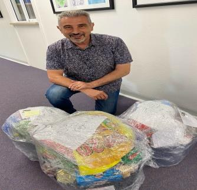
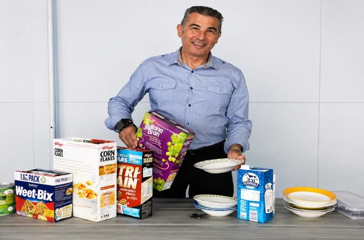

What Nick does
Nick and his wife Lindy have served young people in the schools of the St George area for many years. Each week Nick opens the Bible with students in Scripture (SRE) classes. He also leads a lunchtime group for senior students, runs an internship that trains new Scripture teachers, and goes on school camps as chaplain.
His work is overseen by the Bayside Christian Education Board, which is made up of churches from different denominations across the Bayside area. The Board oversees Scripture classes at three schools:
- Bayside High School
- St George Girls High School
- St George School for special needs
- 124students in Years 7 to 11 attend Scripture classes (August 2026)
- 23Year 7 camps in a row that Nick has attended as chaplain
- 20,000+breakfasts served to students through local churches since 2009
- 500students across our three schools is the Board's goal
August 2026
The latest update
After a difficult start to the year at the newly merged Bayside High, Scripture classes are now running well. Scripture is in the school timetable this year, so classes are no longer clashing with other activities.
Year 11 students are engaged and asking thoughtful questions. Year 7 is the most challenging class, so Nick is praying for ways to build real relationships with them. At the end of last term Nick went to the Year 7 camp at Stanwell Tops, where some of his best gospel conversations happen.
A Year 10 student recently told Nick he had committed his life to Jesus. He prayed a prayer of repentance with his family and felt deep joy in knowing he belonged to God.
More families are choosing Scripture, and numbers are higher than they have been for many years. That means more teachers are needed. A volunteer from a local church has joined Nick in teaching, and his intern has started teaching her own classes.
“Be strong and courageous… for the Lord your God goes with you.”
Deuteronomy 31:6
How to pray
- Relationships with students. Pray especially for Year 7, that the challenges become opportunities to build real relationships.
- Students responding to Jesus. Pray for those asking questions and exploring Christianity, and for the Year 10 student who recently trusted Jesus, that he keeps growing.
- Those serving in the school. Pray for the volunteers and the intern giving their time, that God grows their confidence, wisdom and love for students.
- More Scripture teachers. Pray that God raises up people willing and equipped to teach as more families choose Scripture.
When you see a school zone, remember to pray for Scripture in our schools.
The story so far
-
About 116 students across Years 7 to 10

Christmas hampers ready for needy families through Cornerstone Kogarah Nick taught at James Cook Boys High and Moorefield Girls High. A Year 11 student who called himself an atheist began reading the Bible and came to trust Jesus from Romans 10:9. The Year 11 camp at Katoomba saw unusual interest in the gospel. The two schools were due to merge in 2026.
Full newsletter (PDF) -
Scripture begins at the new Bayside High

Nick at the school breakfast club, which closed after more than 20,000 breakfasts The merged school of over 900 students delayed classes through Term 1, and students kept asking Nick when Scripture would start. Classes began in Term 2 with more than 150 students in Combined Scripture and 50 more in Orthodox Scripture. Year 11 was included for the first time. The school breakfast club, which Nick ran in partnership with local churches since 2009, came to an end.
Full newsletter (PDF) -
Classes settle, and more teachers are needed
Scripture is now in the timetable. A Year 10 student has committed his life to Jesus. New teachers are joining Nick, and he is asking for prayer for more.
Full newsletter (PDF)
Partner with Nick
Nick’s ministry is supported by prayer and by gifts from churches and friends. The Bayside Christian Education Board would love to see 500 students regularly attending Scripture classes across our three schools. You can help by giving once or monthly.
- Online, by card
- Use the button above. You can give once or set up a monthly gift.
- Direct debit
- Call SU NSW on 1300 369 596 to set up a bank debit.
- Questions about giving
- Call 1300 369 596 or email support@su.org.au.
Donations over $2 are tax deductible and are processed by SU Australia Ministries Limited, ABN 74 009 669 569.
Get in touch
Bayside Christian Education Board
Our vision is to see a generation of young people coming to know Jesus within the St George area.
baysidesre@generate.org.au